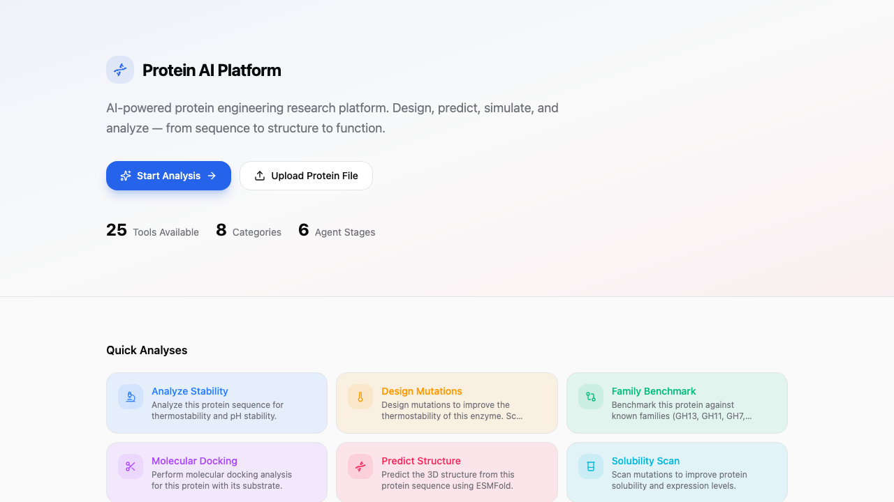
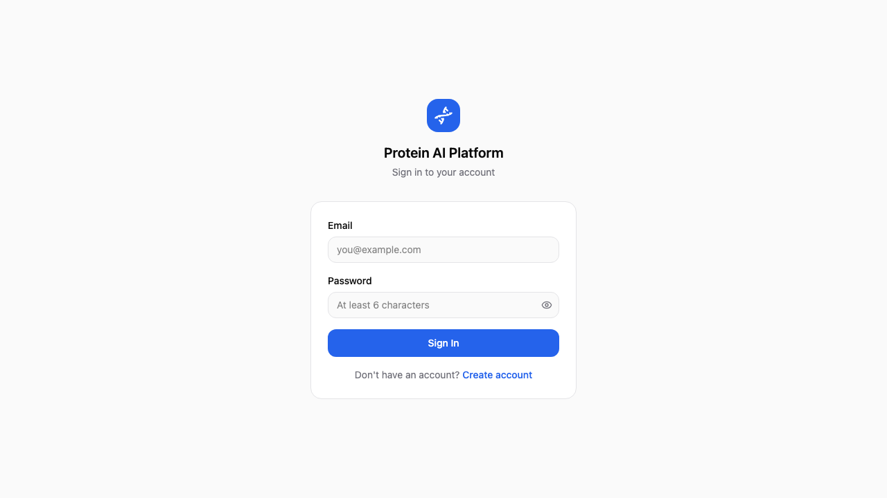

研发入口统一
研发人员可以在项目空间内管理序列、结构文件、分析结果、对话记录和报告输出，减少多工具切换带来的信息断层。
项目空间
文件管理
报告沉淀
面向酶工程研发的 AI 工作台，把 AI 大模型、酶数据库、序列结构分析、突变设计、实验反馈、分子动力学任务和报告协作放进同一套可追溯流程中。
它不是单个预测脚本，而是围绕酶蛋白研发过程建立的工程化平台。
研发人员可以在项目空间内管理序列、结构文件、分析结果、对话记录和报告输出，减少多工具切换带来的信息断层。
通过对话式助手调用 ToolRegistry，把模型预测、数据库查询、结构分析和评分排序组合成可复用工作流。
平台把预测结果、文献证据、实验反馈、MD 工件和任务日志统一归档，支持后续复盘、审计和迭代设计。
平台上层由主控模型编排，下层用 KWB 自有模型和专题酶数据库提供领域证据。
面向酶改造的本地研发体系，规划突变候选排序、稳定性预测、活性风险评估、底物适配评分和实验成功率预测五个任务头。
当前定位：作为平台工具接入，由主控大模型负责工作流和报告；高级结构模型仍处于接口/特征缓存/质量门控阶段，未宣称具备已训练的生产级神经权重。
本地 `酶数据库` 目录包含 7 类 SQLite 专题库：酸性蛋白酶、淀粉酶、脂肪酶、葡萄糖氧化酶、木聚糖酶、植酸酶和甘露聚糖酶。
当前定位：本地只读数据源，用于检索、证据卡片、训练样本构建、benchmark 和实验反馈闭环，不自动同步生产服务器。
模型负责排序与推断，数据库负责提供可追溯的论文、变体、测量和证据上下文。
| 模型层 | 作用 | 当前状态 |
|---|---|---|
| 主控编排层 | 接收研发问题，调用工具和 KWB-EnzymeDesigner，汇总证据并生成报告。 | 平台已接入 |
| 序列特征层 | ESM2/ESM C 风格嵌入、位点窗口、家族和保守性特征。 | 逐步接入 |
| 结构与能量层 | 结构感知表示、残基邻域图、ddG/稳定性特征和底物适配信号。 | 需质量门控 |
| 多任务输出层 | 突变排序、稳定性、活性风险、底物适配、实验成功率五个任务头。 | 接口/基线 |
| 决策层 | 综合不确定性、证据等级和 Pareto 前沿，输出 Go/Watch/No-Go。 | 规则与服务框架 |
| 专题酶库 | 论文 | 变体 | 测量/扩展证据 |
|---|---|---|---|
| 酸性蛋白酶 | 126 | 124 | 162 条测量 |
| 淀粉酶 | 57 | 60 | 129 条测量 |
| 葡萄糖氧化酶 | 68 | 101 | 806 条测量 |
| 脂肪酶 | 12 | 17 | 25 mutations / 18 claims |
| 甘露聚糖酶 | 36 | 61 | 81 条测量 |
| 植酸酶 | 44 | 86 | 81 条测量 |
| 木聚糖酶 | 81 | 114 | 180 条测量 |
| 合计 | 424 | 563 | 1,439 条测量 |
前端负责研发体验，后端负责认证、工具编排和数据治理，计算任务交给独立队列与 Worker 执行。
重点价值来自“研发流程闭环”和“科学计算边界清晰”，不是简单堆模型名称。
研发问题可从聊天入口发起，自动调用工具、解释结果、生成 Markdown 报告，并发布到项目 Wiki。
支持 PDB 上传、解析、3D 查看、注释卡片、结构映射、任务提交和 MD 结果查看。
结合保守性、结构位置、功能注释、湿实验反馈和上位性风险，输出候选突变的分层建议。
GROMACS、Vina、OpenBabel、ACPYPE 等工具链缺失时返回 blocked 或 unavailable，不用随机结果冒充科学计算。
项目、报告、Wiki、文件、任务和权限在同一平台内管理，适合团队复盘和持续积累。
具备 Docker、阿里云部署模板、备份恢复、发布验收、健康检查和运维状态接口。
把 KWB-EnzymeDesigner 的模型输出与专题酶数据库的论文、变体、测量和证据缺口放在同一套报告和审计上下文中。
页面引用当前项目已有截图，便于浏览者快速理解实际使用形态。


下表按研发场景组织，区分已具备的平台能力和依赖外部工具链的科学计算能力。
| 场景 | 平台能力 | 典型产出 | 当前状态 |
|---|---|---|---|
| AI 研发助手 | 多轮对话、工具发现、流式回答、结果解释、报告生成、Wiki 发布。 | 分析摘要、工具调用记录、Markdown 报告。 | 已集成 |
| 序列分析 | BLAST/序列搜索、ESM 系列预测、性质预测、信号肽预测、功能注释。 | 相似序列、功能判断、性质指标、注释卡片。 | 已集成 |
| 结构分析 | PDB 上传解析、3D 查看、结构映射、催化位点查询、Foldseek 结构检索入口。 | 结构视图、链/残基信息、结构注释、相似结构线索。 | 已集成 |
| 结构预测与设计 | AlphaFold、ESMFold、RoseTTAFold、RFdiffusion、ProteinMPNN、LigandMPNN 等工具入口。 | 预测结构、设计序列、候选构象、设计参数记录。 | 接口就绪 |
| 突变推荐 | 突变扫描、优先级评分、上位性检查、湿实验反馈引用、benchmark 对比。 | 候选突变列表、Go/Watch/No-Go 建议、风险说明。 | 已集成 |
| AI 大模型 | KWB-EnzymeDesigner 多任务模型，支持突变排序、稳定性、活性风险、底物适配和实验成功率任务规划。 | 多头评分、候选排序、证据分层、模型版本和运行事件。 | 本地研发/工具接入 |
| 文献与数据证据 | 专题酶数据库、注释数据、KWB lipase 证据库、SIFTS 映射、deploy_data readiness、数据导入脚本。 | 证据卡片、引用线索、论文/变体/测量统计、数据缺口提示。 | 已集成 |
| 酶数据库 | 酸性蛋白酶、淀粉酶、脂肪酶、葡萄糖氧化酶、木聚糖酶、植酸酶、甘露聚糖酶 7 类专题 SQLite 数据库。 | 424 篇论文、563 个变体、1,439 条测量及脂肪酶证据扩展表。 | 本地只读数据层 |
| 分子动力学 | GROMACS MD 管线接口、异步提交、artifact manifest、RMSD/RMSF/Rg/SASA 解析。 | 轨迹、拓扑、参数、日志、分析 CSV 和可下载工件。 | 需 GROMACS 节点验收 |
| 底物/配体链路 | 2D SDF 预处理、3D 构象生成、PDBQT、Vina docking、小分子 topology、复合物 MD 的流程框架。 | 预处理结果、docking 输入、topology 前置产物、blocked 原因。 | 需 OpenBabel/Vina/ACPYPE |
| 协作与知识库 | 项目 ACL、文件管理、对话归档、Outline Wiki 嵌入、OIDC 单点桥接。 | 项目知识库、可分享报告、团队研发记录。 | 已集成 |
| 部署运维 | Docker Compose、阿里云 App/GPU 拓扑、备份恢复、发布包、健康检查、任务审计。 | 部署包、验收记录、恢复演练材料、运维摘要。 | 模板就绪 |
平台适合从单个酶的快速分析逐步推进到多轮突变设计和实验反馈。
既能本地演示，也能迁移到云上托管服务和独立科学计算节点。
通过 Nginx 暴露 4200 入口，Docker Compose 启动前端、后端、PostgreSQL、Redis、MinIO、ChromaDB 和 Outline，适合演示、开发和功能验收。
App ECS 承载平台服务，GPU ECS 承载 MD 和 ligand worker，数据层使用 RDS PostgreSQL、Cloud Redis 和 OSS，适合后续真实计算和团队使用。